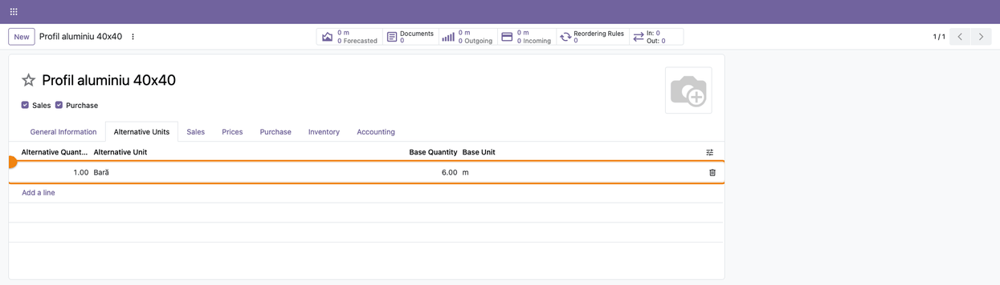
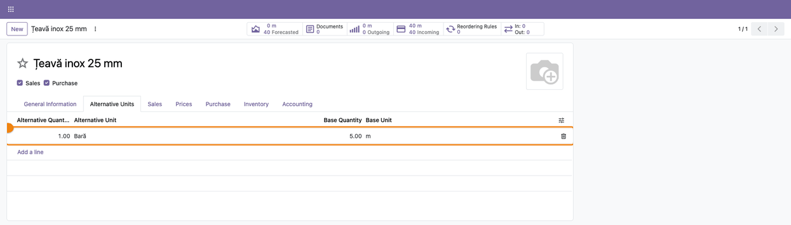
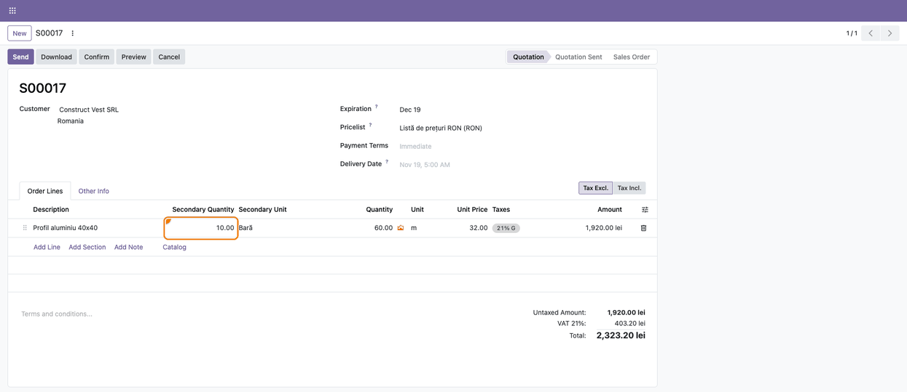
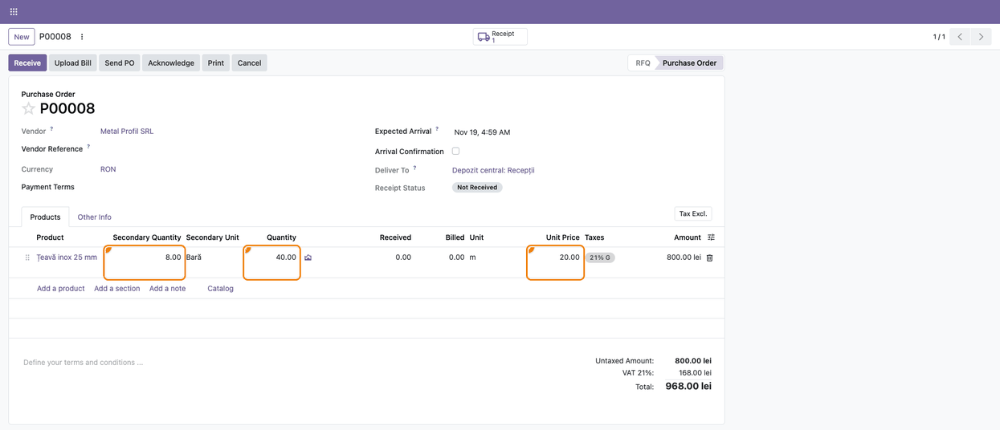
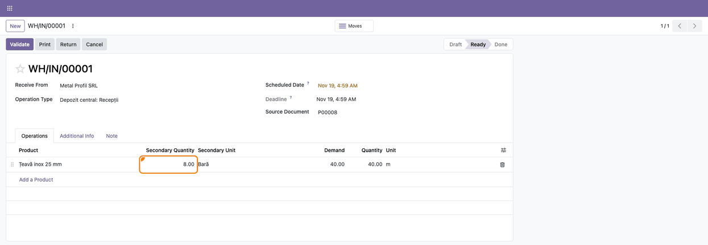

This module adds product specific conversion factors between units of measure, following the SAP material master (MARM) pattern.
In standard Odoo the conversion factor belongs to the unit of measure itself, so "1 box = 12 units" is global. With this module the factor is defined per product, on the Alternative Units tab of the product form:
3 m² = 4 Units— each piece covers 0.75 m²1 kg = 2 Units— each piece weighs 0.5 kg
The stock is always kept in the product base unit. On sale order lines, purchase order lines and stock moves the user can enter the quantity in an alternative unit (kg, m², ...) and the line quantity is computed automatically — and vice versa: changing the line quantity updates the secondary quantity.
The price always stays in the base unit: the secondary quantity is only an input/information helper, it never affects pricing, invoicing or stock valuation.
Unlike creating dedicated UoM records per product, this approach keeps the
global UoM table clean and does not affect standard reports, stock valuation
or any code reading uom.factor directly in SQL. The other side of this
choice is that prices, received quantities, stock and manufacturing stay in
the base unit: see Use Cases / Context for the limitations and for the
standard alternative when the alternative unit must be a real unit.
Limitations
The secondary quantity is an input and information helper on the line. The document itself stays in the line unit (usually the product base unit), so the alternative unit does not reach:
- Prices.The unit price stays per line unit. A vendor price of 120 per bar of 6 m must be entered as 20 per m, and the vendor pricelist cannot be expressed in bars. When the factor does not divide the price exactly (125 / 6 = 20.8333), the vendor bill and the received e-Invoice (in bars) can differ by rounding.
- Received quantity.On the receipt, the secondary column shows the demand, computed from the ordered quantity, not the quantity actually received. A short delivery of 8 bars out of 10 is entered as 48 m. Detailed operations and the Barcode app have no secondary unit.
- Stock.Stock and stock reports are only in the base unit; the quantity on hand is never shown in bars.
- Manufacturing.The module does not depend on
mrp: bills of materials and manufacturing orders have no secondary unit, and the consumption is in the base unit. Cutting, offcuts and bar remnants are not handled. - Rounding.A quantity entered in the secondary unit is rounded up to a whole base unit only when the base unit counts pieces (the reference tree of Units). For continuous units (m, kg, m²) the exact quantity is kept.
Do not use the alternative unit as the line unit
The conversion factor lives only in this module. If the generic unit (e.g. “Bar”) is added to the product packagings, to a bill of materials line or to a vendor pricelist line, Odoo converts it with the global factor of the unit, not with the product factor, and no error is raised.
When the bar must be a real unit
When the price, the receipt or the bill of materials must be in the alternative unit, use a real unit of measure per factor instead of this module, with standard Odoo:
- Create one unit per distinct factor, with the base unit as reference unit:
“Bar 6 m” (reference unit
m, ratio 6), “Bar 5 m” (reference unitm, ratio 5). Products with the same bar length share the same unit. - Add the unit to the Packagings of each product (
uom_ids). - Map the UNECE code of each such unit (
deltatech_uom_unece), otherwise e-Invoicing declaresC62(piece). - To keep the order unit on receipts and deliveries, enable the system
parameter
stock.propagate_uom; it applies to all products.
Overriding uom.uom._compute_quantity with the product in the context is not
enough to obtain the same result: stock valuation at receipt
(purchase_stock), the purchase price, the sale, purchase and invoice SQL
reports and the product catalog in JS use uom.factor directly.
Generating these units automatically from the product factor lines is a possible future evolution of this module.
Enable Units of Measure in Inventory → Configuration → Settings and create the alternative unit (e.g. Bar) in Inventory → Configuration → Units & Packagings, without a reference unit: its factor is set on each product, not on the unit.
- Open the product (Inventory → Products → Products), tab Alternative Units, and add a line: Alternative Quantity 1, Alternative Unit Bar, Base Quantity 6. It reads "1 Bar = 6 m"; Base Unit shows the product unit.

- The same unit can have another factor on another product: on the stainless pipe, 1 Bar = 5 m.

- On a sale order line, choose Secondary Unit Bar and type 10 in Secondary Quantity: the line quantity becomes 60 m. Both columns are hidden by default; show them from the optional columns button of the lines list. The unit price stays per metre.

- On a purchase order line, 8 Bar of pipe give 40 m. The price is per metre: a vendor price of 100 per 5 m bar is entered as 20 per metre.

- The receipt (and the delivery of a sale order) keeps the secondary unit of the order line. The secondary quantity of the move is computed from the Demand; the quantity actually received is entered in the Quantity column, in the base unit. Do not edit the secondary quantity on a receipt: it changes the demand, not the received quantity.

Stock, prices, invoices and stock valuation stay in the product base unit. See Use Cases / Context for the limitations and for the standard alternative (one real unit per factor) when the price, the receipt or the bill of materials must be in bars.
20.0.1.2.4 (2026-11-19)
- A sale order line, purchase order line or stock move created with only the secondary quantity (API, import) gets its quantity before the amounts are computed: the line subtotal no longer stays at quantity 1 (#4246).
20.0.1.2.3 (2026-11-19)
- A quantity entered in the secondary unit is rounded up to a whole base unit only when the base unit counts pieces. For metres, kilograms or square metres the exact quantity is kept: with 1 bar = 5.8 m, 3 bars now give 17.4 m instead of 18 m (#4242).
20.0.1.2.2 (2026-11-19)
- Documented the limitations of the secondary unit (prices, received quantities, stock, manufacturing, rounding) and the standard alternative of one real unit per factor ("Bar 6 m").
- Sale order lines: the Secondary Quantity and Secondary Unit columns are placed before the quantity column again; on 20.0 they were rendered inside another cell of the lines list.
- Consultant sheet, usage guide with screenshots and demo GIF.
- Romanian translation of the "alternative unit must be different" error.
20.0.1.2.1 (2026-10-09)
- Apps Store banner (banner.json).
19.0.1.2.0 (2026-10-01)
- Creating, editing or deleting a product unit conversion now recomputes the secondary quantity of the open sale order lines, purchase order lines and stock moves using it. Locked or cancelled orders and done or cancelled moves keep the quantity computed with the previous ratio.
19.0.1.1.1 (2026-09-29)
- Own module icon, instead of the generic gears it had.
19.0.1.1.0 (2026-08-06)
- Quantities entered in a secondary unit are rounded up to whole base units (no fractional pieces); the secondary quantity is recomputed from the rounded piece count.
- The secondary unit is propagated from the sale order line to the delivery move and from the purchase order line to the receipt move.
19.0.1.0.0 (2026-08-06)
- Initial version: product UoM conversion table (SAP MARM style), secondary quantity/unit on sale order lines, purchase order lines and stock moves.